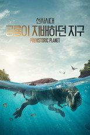

애플TV+ 전체313편 중 인기 60편
순서는 TMDB 인기도입니다 — 넷플릭스 외 서비스는 공식 순위를 공개하지 않습니다. 제공처는 JustWatch 자료(2026-09-22 확인)이며 가입 전 서비스에서 최종 확인하세요. 애플TV+ 요금·할인 →
1 '테드 래소' - Ted Lasso Ted Lasso시리즈 · 2020 · 드라마 · 코미디 · 티빙에도제공처 ↗2
'테드 래소' - Ted Lasso Ted Lasso시리즈 · 2020 · 드라마 · 코미디 · 티빙에도제공처 ↗2 '지하창고 사일로의 비밀' - Silo Silo시리즈 · 2023 · SF/판타지 · 드라마 · 티빙에도제공처 ↗3
'지하창고 사일로의 비밀' - Silo Silo시리즈 · 2023 · SF/판타지 · 드라마 · 티빙에도제공처 ↗3 '슬로 호시스' - Slow Horses Slow Horses시리즈 · 2022 · 범죄 · 드라마 · 티빙에도제공처 ↗4
'슬로 호시스' - Slow Horses Slow Horses시리즈 · 2022 · 범죄 · 드라마 · 티빙에도제공처 ↗4 '메이데이' - Mayday Mayday영화 · 2026 · 액션 · 코미디 · 111분 · 티빙에도제공처 ↗5
'메이데이' - Mayday Mayday영화 · 2026 · 액션 · 코미디 · 111분 · 티빙에도제공처 ↗5 '위도우스 베이의 저주' - Widow's Bay Widow's Bay시리즈 · 2026 · 드라마 · 코미디 · 티빙에도제공처 ↗6
'위도우스 베이의 저주' - Widow's Bay Widow's Bay시리즈 · 2026 · 드라마 · 코미디 · 티빙에도제공처 ↗6 '포 올 맨카인드' - For All Mankind For All Mankind시리즈 · 2019 · 드라마 · SF/판타지 · 티빙에도제공처 ↗7
'포 올 맨카인드' - For All Mankind For All Mankind시리즈 · 2019 · 드라마 · SF/판타지 · 티빙에도제공처 ↗7 '30일의 밤' - Dark Matter Dark Matter시리즈 · 2024 · SF/판타지 · 드라마 · 티빙에도제공처 ↗8
'30일의 밤' - Dark Matter Dark Matter시리즈 · 2024 · SF/판타지 · 드라마 · 티빙에도제공처 ↗8 '세브란스: 단절' - Severance Severance시리즈 · 2022 · 드라마 · 미스터리 · 티빙에도제공처 ↗9
'세브란스: 단절' - Severance Severance시리즈 · 2022 · 드라마 · 미스터리 · 티빙에도제공처 ↗9 F1 더 무비 F1영화 · 2025 · 액션 · 드라마 · 140분 · 티빙에도제공처 ↗10
F1 더 무비 F1영화 · 2025 · 액션 · 드라마 · 140분 · 티빙에도제공처 ↗10 '파운데이션' - Foundation Foundation시리즈 · 2021 · SF/판타지 · 드라마 · 티빙에도제공처 ↗11
'파운데이션' - Foundation Foundation시리즈 · 2021 · SF/판타지 · 드라마 · 티빙에도제공처 ↗11 '플루리부스: 행복의 시대' - Pluribus Pluribus시리즈 · 2025 · 드라마 · SF/판타지 · 티빙에도제공처 ↗12'더 모닝 쇼' - The Morning Show The Morning Show시리즈 · 2019 · 드라마제공처 ↗13
'플루리부스: 행복의 시대' - Pluribus Pluribus시리즈 · 2025 · 드라마 · SF/판타지 · 티빙에도제공처 ↗12'더 모닝 쇼' - The Morning Show The Morning Show시리즈 · 2019 · 드라마제공처 ↗13 '맵다 매워! 지미의 상담소' - Shrinking Shrinking시리즈 · 2023 · 드라마 · 코미디 · 티빙에도제공처 ↗14
'맵다 매워! 지미의 상담소' - Shrinking Shrinking시리즈 · 2023 · 드라마 · 코미디 · 티빙에도제공처 ↗14 '어둠의 나날' - See See시리즈 · 2019 · 드라마 · SF/판타지 · 티빙에도제공처 ↗15
'어둠의 나날' - See See시리즈 · 2019 · 드라마 · SF/판타지 · 티빙에도제공처 ↗15 '더 캐니언' - The Gorge The Gorge영화 · 2025 · 로맨스 · SF/판타지 · 128분 · 티빙에도제공처 ↗16
'더 캐니언' - The Gorge The Gorge영화 · 2025 · 로맨스 · SF/판타지 · 128분 · 티빙에도제공처 ↗16 '마지막 흔적' - Last Seen Last Seen시리즈 · 2026 · 범죄 · 드라마 · 티빙에도제공처 ↗17
'마지막 흔적' - Last Seen Last Seen시리즈 · 2026 · 범죄 · 드라마 · 티빙에도제공처 ↗17 플라워 킬링 문 Killers of the Flower Moon영화 · 2023 · 범죄 · 역사 · 206분 · 티빙에도제공처 ↗18'모나크: 레거시 오브 몬스터즈' - Monarch: Legacy of Monsters Monarch: Legacy of Monsters시리즈 · 2023 · SF/판타지 · 드라마제공처 ↗19
플라워 킬링 문 Killers of the Flower Moon영화 · 2023 · 범죄 · 역사 · 206분 · 티빙에도제공처 ↗18'모나크: 레거시 오브 몬스터즈' - Monarch: Legacy of Monsters Monarch: Legacy of Monsters시리즈 · 2023 · SF/판타지 · 드라마제공처 ↗19 '럭키' - Lucky Lucky시리즈 · 2026 · 드라마 · 범죄 · 티빙에도제공처 ↗20
'럭키' - Lucky Lucky시리즈 · 2026 · 드라마 · 범죄 · 티빙에도제공처 ↗20 '2050: 벼랑 끝 인류' - Extrapolations Extrapolations시리즈 · 2023 · 드라마 · SF/판타지 · 티빙에도제공처 ↗21
'2050: 벼랑 끝 인류' - Extrapolations Extrapolations시리즈 · 2023 · 드라마 · SF/판타지 · 티빙에도제공처 ↗21 '인베이션' - Invasion Invasion시리즈 · 2021 · SF/판타지 · 드라마 · 티빙에도제공처 ↗22'슈거' - Sugar Sugar시리즈 · 2024 · 드라마 · 미스터리제공처 ↗23
'인베이션' - Invasion Invasion시리즈 · 2021 · SF/판타지 · 드라마 · 티빙에도제공처 ↗22'슈거' - Sugar Sugar시리즈 · 2024 · 드라마 · 미스터리제공처 ↗23 '프렌즈 & 네이버스' - Your Friends & Neighbors Your Friends & Neighbors시리즈 · 2025 · 드라마 · 범죄 · 티빙에도제공처 ↗24
'프렌즈 & 네이버스' - Your Friends & Neighbors Your Friends & Neighbors시리즈 · 2025 · 드라마 · 범죄 · 티빙에도제공처 ↗24 '미틱 퀘스트' - Mythic Quest Mythic Quest시리즈 · 2020 · 코미디 · 티빙에도제공처 ↗25
'미틱 퀘스트' - Mythic Quest Mythic Quest시리즈 · 2020 · 코미디 · 티빙에도제공처 ↗25 '케이프 피어' - Cape Fear Cape Fear시리즈 · 2026 · 범죄 · 드라마 · 티빙에도제공처 ↗26
'케이프 피어' - Cape Fear Cape Fear시리즈 · 2026 · 범죄 · 드라마 · 티빙에도제공처 ↗26 프로포즈 The Proposal영화 · 2009 · 코미디 · 로맨스 · 107분 · 디즈니+, 티빙에도제공처 ↗27
프로포즈 The Proposal영화 · 2009 · 코미디 · 로맨스 · 107분 · 디즈니+, 티빙에도제공처 ↗27 '나쁜 원숭이' - Bad Monkey Bad Monkey시리즈 · 2024 · 코미디 · 범죄 · 티빙에도제공처 ↗28
'나쁜 원숭이' - Bad Monkey Bad Monkey시리즈 · 2024 · 코미디 · 범죄 · 티빙에도제공처 ↗28 '배드 시스터즈' - Bad Sisters Bad Sisters시리즈 · 2022 · 드라마 · 범죄 · 티빙에도제공처 ↗29
'배드 시스터즈' - Bad Sisters Bad Sisters시리즈 · 2022 · 드라마 · 범죄 · 티빙에도제공처 ↗29 '돈벼락' - Loot Loot시리즈 · 2022 · 코미디 · 티빙에도제공처 ↗30
'돈벼락' - Loot Loot시리즈 · 2022 · 코미디 · 티빙에도제공처 ↗30 우주전쟁 War of the Worlds영화 · 2005 · 모험 · 스릴러 · 117분 · 넷플릭스, 왓챠, 티빙에도제공처 ↗31'트루스 비 톨드' - Truth Be Told Truth Be Told시리즈 · 2019 · 드라마 · 미스터리제공처 ↗32
우주전쟁 War of the Worlds영화 · 2005 · 모험 · 스릴러 · 117분 · 넷플릭스, 왓챠, 티빙에도제공처 ↗31'트루스 비 톨드' - Truth Be Told Truth Be Told시리즈 · 2019 · 드라마 · 미스터리제공처 ↗32 '하이재킹' - Hijack Hijack시리즈 · 2023 · 드라마 · 티빙에도제공처 ↗33
'하이재킹' - Hijack Hijack시리즈 · 2023 · 드라마 · 티빙에도제공처 ↗33 '더 스튜디오' - The Studio The Studio시리즈 · 2025 · 코미디 · 드라마 · 티빙에도제공처 ↗34
'더 스튜디오' - The Studio The Studio시리즈 · 2025 · 코미디 · 드라마 · 티빙에도제공처 ↗34 '두 번째 스윙' - Stick Stick시리즈 · 2025 · 코미디 · 드라마 · 티빙에도제공처 ↗35
'두 번째 스윙' - Stick Stick시리즈 · 2025 · 코미디 · 드라마 · 티빙에도제공처 ↗35 '카풀 노래방: 시리즈' - Carpool Karaoke: The Series Carpool Karaoke: The Series시리즈 · 2017 · 코미디 · 티빙에도제공처 ↗36
'카풀 노래방: 시리즈' - Carpool Karaoke: The Series Carpool Karaoke: The Series시리즈 · 2017 · 코미디 · 티빙에도제공처 ↗36 '마스터스 오브 디 에어' - Masters of the Air Masters of the Air시리즈 · 2024 · 드라마 · 전쟁 · 티빙에도제공처 ↗37어카운턴트 The Accountant영화 · 2016 · 범죄 · 스릴러 · 128분 · 넷플릭스, 프라임비디오, 왓챠에도제공처 ↗38마고가 돈 문제에 대처하는 법' - Margo's Got Money Troubles Margo's Got Money Troubles시리즈 · 2026 · 드라마 · 코미디 · 티빙에도제공처 ↗39
'마스터스 오브 디 에어' - Masters of the Air Masters of the Air시리즈 · 2024 · 드라마 · 전쟁 · 티빙에도제공처 ↗37어카운턴트 The Accountant영화 · 2016 · 범죄 · 스릴러 · 128분 · 넷플릭스, 프라임비디오, 왓챠에도제공처 ↗38마고가 돈 문제에 대처하는 법' - Margo's Got Money Troubles Margo's Got Money Troubles시리즈 · 2026 · 드라마 · 코미디 · 티빙에도제공처 ↗39 '천국부터 지옥까지' - Highest 2 Lowest Highest 2 Lowest영화 · 2025 · 스릴러 · 범죄 · 133분 · 티빙에도제공처 ↗40
'천국부터 지옥까지' - Highest 2 Lowest Highest 2 Lowest영화 · 2025 · 스릴러 · 범죄 · 133분 · 티빙에도제공처 ↗40 박물관이 살아있다! Night at the Museum영화 · 2006 · SF/판타지 · 가족 · 108분 · 넷플릭스, 디즈니+, 티빙에도제공처 ↗41'그가 나에게 말하지 않은 것' - The Last Thing He Told Me The Last Thing He Told Me시리즈 · 2023 · 미스터리 · 드라마 · 티빙에도제공처 ↗42'머더봇 다이어리' - Murderbot Murderbot시리즈 · 2025 · 코미디 · 드라마 · 티빙에도제공처 ↗43'디킨슨' - Dickinson Dickinson시리즈 · 2019 · 코미디 · 드라마 · 티빙에도제공처 ↗44'아카풀코' - Acapulco Acapulco시리즈 · 2021 · 코미디 · 드라마 · 티빙에도제공처 ↗45'우먼 인 블루' - Women in Blue Las azules시리즈 · 2024 · 범죄 · 드라마 · 티빙에도제공처 ↗46미녀 삼총사 Charlie's Angels영화 · 2000 · 액션 · 코미디 · 98분 · 웨이브, 왓챠에도제공처 ↗47나폴레옹 Napoleon영화 · 2023 · 역사 · 전쟁 · 158분제공처 ↗48'애프터파티' - The Afterparty The Afterparty시리즈 · 2022 · 미스터리 · 코미디 · 티빙에도제공처 ↗49'디스클레이머' - Disclaimer Disclaimer시리즈 · 2024 · 드라마 · 미스터리 · 티빙에도제공처 ↗50
박물관이 살아있다! Night at the Museum영화 · 2006 · SF/판타지 · 가족 · 108분 · 넷플릭스, 디즈니+, 티빙에도제공처 ↗41'그가 나에게 말하지 않은 것' - The Last Thing He Told Me The Last Thing He Told Me시리즈 · 2023 · 미스터리 · 드라마 · 티빙에도제공처 ↗42'머더봇 다이어리' - Murderbot Murderbot시리즈 · 2025 · 코미디 · 드라마 · 티빙에도제공처 ↗43'디킨슨' - Dickinson Dickinson시리즈 · 2019 · 코미디 · 드라마 · 티빙에도제공처 ↗44'아카풀코' - Acapulco Acapulco시리즈 · 2021 · 코미디 · 드라마 · 티빙에도제공처 ↗45'우먼 인 블루' - Women in Blue Las azules시리즈 · 2024 · 범죄 · 드라마 · 티빙에도제공처 ↗46미녀 삼총사 Charlie's Angels영화 · 2000 · 액션 · 코미디 · 98분 · 웨이브, 왓챠에도제공처 ↗47나폴레옹 Napoleon영화 · 2023 · 역사 · 전쟁 · 158분제공처 ↗48'애프터파티' - The Afterparty The Afterparty시리즈 · 2022 · 미스터리 · 코미디 · 티빙에도제공처 ↗49'디스클레이머' - Disclaimer Disclaimer시리즈 · 2024 · 드라마 · 미스터리 · 티빙에도제공처 ↗50 '패밀리 플랜' - The Family Plan The Family Plan영화 · 2023 · 액션 · 코미디 · 118분 · 티빙에도제공처 ↗51
'패밀리 플랜' - The Family Plan The Family Plan영화 · 2023 · 액션 · 코미디 · 118분 · 티빙에도제공처 ↗51 '스누피 스페셜: 스누피 집 찾기 대소동' - Snoopy Presents: There's No Place Like Home, Snoopy Snoopy Presents: There's No Place Like Home, Snoopy영화 · 2026 · 애니메이션 · 가족 · 32분 · 티빙에도제공처 ↗52'무죄추정' - Presumed Innocent Presumed Innocent시리즈 · 2024 · 드라마 · 미스터리 · 티빙에도제공처 ↗53
'스누피 스페셜: 스누피 집 찾기 대소동' - Snoopy Presents: There's No Place Like Home, Snoopy Snoopy Presents: There's No Place Like Home, Snoopy영화 · 2026 · 애니메이션 · 가족 · 32분 · 티빙에도제공처 ↗52'무죄추정' - Presumed Innocent Presumed Innocent시리즈 · 2024 · 드라마 · 미스터리 · 티빙에도제공처 ↗53 셜록 홈즈 Sherlock Holmes영화 · 2009 · 액션 · 모험 · 128분 · 왓챠, 티빙에도제공처 ↗54
셜록 홈즈 Sherlock Holmes영화 · 2009 · 액션 · 모험 · 128분 · 왓챠, 티빙에도제공처 ↗54 아가일 Argylle영화 · 2024 · 액션 · 모험 · 139분 · 티빙에도제공처 ↗55'블랙 버드' - Black Bird Black Bird시리즈 · 2022 · 드라마 · 범죄 · 티빙에도제공처 ↗56'라스트 프런티어' - The Last Frontier The Last Frontier시리즈 · 2025 · 드라마 · 범죄 · 티빙에도제공처 ↗57'크라우디드' - The Crowded Room The Crowded Room시리즈 · 2023 · 드라마 · 범죄 · 티빙에도제공처 ↗58프래글 록 Fraggle Rock시리즈 · 1983 · 가족 · SF/판타지제공처 ↗59'트라잉' - Trying Trying시리즈 · 2020 · 코미디 · 티빙에도제공처 ↗60
아가일 Argylle영화 · 2024 · 액션 · 모험 · 139분 · 티빙에도제공처 ↗55'블랙 버드' - Black Bird Black Bird시리즈 · 2022 · 드라마 · 범죄 · 티빙에도제공처 ↗56'라스트 프런티어' - The Last Frontier The Last Frontier시리즈 · 2025 · 드라마 · 범죄 · 티빙에도제공처 ↗57'크라우디드' - The Crowded Room The Crowded Room시리즈 · 2023 · 드라마 · 범죄 · 티빙에도제공처 ↗58프래글 록 Fraggle Rock시리즈 · 1983 · 가족 · SF/판타지제공처 ↗59'트라잉' - Trying Trying시리즈 · 2020 · 코미디 · 티빙에도제공처 ↗60
'테드 래소' - Ted Lasso Ted Lasso시리즈 · 2020 · 드라마 · 코미디 · 티빙에도제공처 ↗2'지하창고 사일로의 비밀' - Silo Silo시리즈 · 2023 · SF/판타지 · 드라마 · 티빙에도제공처 ↗3'슬로 호시스' - Slow Horses Slow Horses시리즈 · 2022 · 범죄 · 드라마 · 티빙에도제공처 ↗4'메이데이' - Mayday Mayday영화 · 2026 · 액션 · 코미디 · 111분 · 티빙에도제공처 ↗5'위도우스 베이의 저주' - Widow's Bay Widow's Bay시리즈 · 2026 · 드라마 · 코미디 · 티빙에도제공처 ↗6'포 올 맨카인드' - For All Mankind For All Mankind시리즈 · 2019 · 드라마 · SF/판타지 · 티빙에도제공처 ↗7'30일의 밤' - Dark Matter Dark Matter시리즈 · 2024 · SF/판타지 · 드라마 · 티빙에도제공처 ↗8'세브란스: 단절' - Severance Severance시리즈 · 2022 · 드라마 · 미스터리 · 티빙에도제공처 ↗9F1 더 무비 F1영화 · 2025 · 액션 · 드라마 · 140분 · 티빙에도제공처 ↗10'파운데이션' - Foundation Foundation시리즈 · 2021 · SF/판타지 · 드라마 · 티빙에도제공처 ↗11'플루리부스: 행복의 시대' - Pluribus Pluribus시리즈 · 2025 · 드라마 · SF/판타지 · 티빙에도제공처 ↗12'더 모닝 쇼' - The Morning Show The Morning Show시리즈 · 2019 · 드라마제공처 ↗13'맵다 매워! 지미의 상담소' - Shrinking Shrinking시리즈 · 2023 · 드라마 · 코미디 · 티빙에도제공처 ↗14'어둠의 나날' - See See시리즈 · 2019 · 드라마 · SF/판타지 · 티빙에도제공처 ↗15'더 캐니언' - The Gorge The Gorge영화 · 2025 · 로맨스 · SF/판타지 · 128분 · 티빙에도제공처 ↗16'마지막 흔적' - Last Seen Last Seen시리즈 · 2026 · 범죄 · 드라마 · 티빙에도제공처 ↗17플라워 킬링 문 Killers of the Flower Moon영화 · 2023 · 범죄 · 역사 · 206분 · 티빙에도제공처 ↗18'모나크: 레거시 오브 몬스터즈' - Monarch: Legacy of Monsters Monarch: Legacy of Monsters시리즈 · 2023 · SF/판타지 · 드라마제공처 ↗19'럭키' - Lucky Lucky시리즈 · 2026 · 드라마 · 범죄 · 티빙에도제공처 ↗20'2050: 벼랑 끝 인류' - Extrapolations Extrapolations시리즈 · 2023 · 드라마 · SF/판타지 · 티빙에도제공처 ↗21'인베이션' - Invasion Invasion시리즈 · 2021 · SF/판타지 · 드라마 · 티빙에도제공처 ↗22'슈거' - Sugar Sugar시리즈 · 2024 · 드라마 · 미스터리제공처 ↗23'프렌즈 & 네이버스' - Your Friends & Neighbors Your Friends & Neighbors시리즈 · 2025 · 드라마 · 범죄 · 티빙에도제공처 ↗24'미틱 퀘스트' - Mythic Quest Mythic Quest시리즈 · 2020 · 코미디 · 티빙에도제공처 ↗25'케이프 피어' - Cape Fear Cape Fear시리즈 · 2026 · 범죄 · 드라마 · 티빙에도제공처 ↗26프로포즈 The Proposal영화 · 2009 · 코미디 · 로맨스 · 107분 · 디즈니+, 티빙에도제공처 ↗27'나쁜 원숭이' - Bad Monkey Bad Monkey시리즈 · 2024 · 코미디 · 범죄 · 티빙에도제공처 ↗28'배드 시스터즈' - Bad Sisters Bad Sisters시리즈 · 2022 · 드라마 · 범죄 · 티빙에도제공처 ↗29'돈벼락' - Loot Loot시리즈 · 2022 · 코미디 · 티빙에도제공처 ↗30우주전쟁 War of the Worlds영화 · 2005 · 모험 · 스릴러 · 117분 · 넷플릭스, 왓챠, 티빙에도제공처 ↗31'트루스 비 톨드' - Truth Be Told Truth Be Told시리즈 · 2019 · 드라마 · 미스터리제공처 ↗32'하이재킹' - Hijack Hijack시리즈 · 2023 · 드라마 · 티빙에도제공처 ↗33'더 스튜디오' - The Studio The Studio시리즈 · 2025 · 코미디 · 드라마 · 티빙에도제공처 ↗34'두 번째 스윙' - Stick Stick시리즈 · 2025 · 코미디 · 드라마 · 티빙에도제공처 ↗35'카풀 노래방: 시리즈' - Carpool Karaoke: The Series Carpool Karaoke: The Series시리즈 · 2017 · 코미디 · 티빙에도제공처 ↗36'마스터스 오브 디 에어' - Masters of the Air Masters of the Air시리즈 · 2024 · 드라마 · 전쟁 · 티빙에도제공처 ↗37어카운턴트 The Accountant영화 · 2016 · 범죄 · 스릴러 · 128분 · 넷플릭스, 프라임비디오, 왓챠에도제공처 ↗38마고가 돈 문제에 대처하는 법' - Margo's Got Money Troubles Margo's Got Money Troubles시리즈 · 2026 · 드라마 · 코미디 · 티빙에도제공처 ↗39'천국부터 지옥까지' - Highest 2 Lowest Highest 2 Lowest영화 · 2025 · 스릴러 · 범죄 · 133분 · 티빙에도제공처 ↗40박물관이 살아있다! Night at the Museum영화 · 2006 · SF/판타지 · 가족 · 108분 · 넷플릭스, 디즈니+, 티빙에도제공처 ↗41'그가 나에게 말하지 않은 것' - The Last Thing He Told Me The Last Thing He Told Me시리즈 · 2023 · 미스터리 · 드라마 · 티빙에도제공처 ↗42'머더봇 다이어리' - Murderbot Murderbot시리즈 · 2025 · 코미디 · 드라마 · 티빙에도제공처 ↗43'디킨슨' - Dickinson Dickinson시리즈 · 2019 · 코미디 · 드라마 · 티빙에도제공처 ↗44'아카풀코' - Acapulco Acapulco시리즈 · 2021 · 코미디 · 드라마 · 티빙에도제공처 ↗45'우먼 인 블루' - Women in Blue Las azules시리즈 · 2024 · 범죄 · 드라마 · 티빙에도제공처 ↗46미녀 삼총사 Charlie's Angels영화 · 2000 · 액션 · 코미디 · 98분 · 웨이브, 왓챠에도제공처 ↗47나폴레옹 Napoleon영화 · 2023 · 역사 · 전쟁 · 158분제공처 ↗48'애프터파티' - The Afterparty The Afterparty시리즈 · 2022 · 미스터리 · 코미디 · 티빙에도제공처 ↗49'디스클레이머' - Disclaimer Disclaimer시리즈 · 2024 · 드라마 · 미스터리 · 티빙에도제공처 ↗50'패밀리 플랜' - The Family Plan The Family Plan영화 · 2023 · 액션 · 코미디 · 118분 · 티빙에도제공처 ↗51'스누피 스페셜: 스누피 집 찾기 대소동' - Snoopy Presents: There's No Place Like Home, Snoopy Snoopy Presents: There's No Place Like Home, Snoopy영화 · 2026 · 애니메이션 · 가족 · 32분 · 티빙에도제공처 ↗52'무죄추정' - Presumed Innocent Presumed Innocent시리즈 · 2024 · 드라마 · 미스터리 · 티빙에도제공처 ↗53셜록 홈즈 Sherlock Holmes영화 · 2009 · 액션 · 모험 · 128분 · 왓챠, 티빙에도제공처 ↗54아가일 Argylle영화 · 2024 · 액션 · 모험 · 139분 · 티빙에도제공처 ↗55'블랙 버드' - Black Bird Black Bird시리즈 · 2022 · 드라마 · 범죄 · 티빙에도제공처 ↗56'라스트 프런티어' - The Last Frontier The Last Frontier시리즈 · 2025 · 드라마 · 범죄 · 티빙에도제공처 ↗57'크라우디드' - The Crowded Room The Crowded Room시리즈 · 2023 · 드라마 · 범죄 · 티빙에도제공처 ↗58프래글 록 Fraggle Rock시리즈 · 1983 · 가족 · SF/판타지제공처 ↗59'트라잉' - Trying Trying시리즈 · 2020 · 코미디 · 티빙에도제공처 ↗60
'선사시대: 공룡이 지배하던 지구' - Prehistoric Planet Prehistoric Planet시리즈 · 2022 · 다큐멘터리 · 티빙에도제공처 ↗